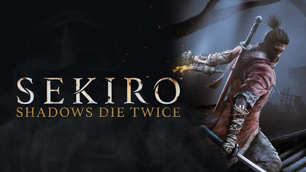
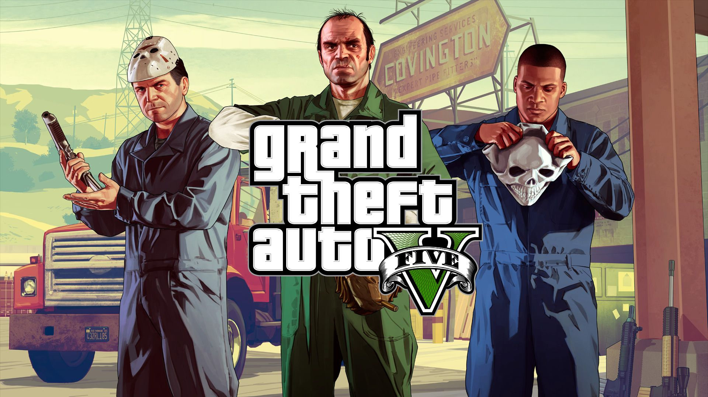
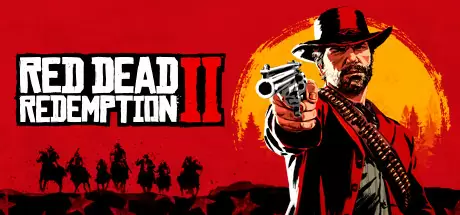

Game Zone
Welcome to Game Zone

Década de 1980 a 1990
Top 5: THE LEGEND OF ZELDA: BREATH OF THE WILD

los habitantes de Hyrule se enteraron por medio de una profecía de que se avecinaba el Gran Cataclismo. La princesa Zelda entrena para despertar su poder y sellar a Ganon, Link es elegido como el portador de la Espada Maestra, mientras que Daruk, Revali, Mipha y Urbosa son elegidos para pilotar a las bestias divinas. Sin embargo, Ganon ideó un plan para contrarrestar los intentos defensas, corrompiendo a todas las máquinas, matando a los campeones y diezmando al reino. Link queda gravemente herido en la batalla y es llevado a una cámara de resurrección conocida como el santuario de la vida, mientras que Zelda se queda atrapada en una batalla con Ganon. Link despierta sin memoria después de estar cien años en la cámara en un reino post-apocalíptico devastado, al salir del santuario conoce a un anciano que es el espíritu del rey Rhoam. El rey le explica que el poder de Zelda se está desvaneciendo y le ruega a Link que derrote a Ganon antes de que se libere y destruya el mundo. Link viaja a través de todo Hyrule para derrotar a las manifestaciones del Cataclismo y liberar los espíritus de los campeones. Después de obtener la Espada Maestra, Link se dirige al castillo de Hyrule para derrotar a Ganon con la ayuda de las bestias divinas.
Top 4: SEKIRO: SHADOWS DIE TWICE
Japón del periodo Sengoku a finales del siglo XVI, un período de conflicto constante entre la vida y la muerte. Su protagonista es un shinobi que fue dado por muerto después de que su señor fuera secuestrado y su brazo cercenado por un líder samurái del Clan Ashina.
Top 3: GRAND THEFT AUTOS V
Nueve años después de un atraco frustrado en Ludendorff (North Yankton), que dejó a uno de sus perpetradores muerto, otro bajo arresto y obligó a un tercero a pasar a la clandestinidad, el ex ladrón de bancos, Michael Townley, fue dado por muerto en North Yankton y ha sido puesto bajo protección de testigos por el agente corrupto del FIB Dave Norton, amigo íntimo del mismo, trasladándolo así con su familia a Los Santos (San Andreas) con una nueva identidad: «Michael De Santa». A Franklin Clinton, que trabaja como embargador de vehículos en un concesionario de coches, junto con su amigo Lamar Davis, se le pide recuperar un vehículo perteneciente al hijo de Michael, Jimmy, quien está atrasado en el pago de su adquisición. Deduciendo que su hijo está punto de convertirse en una víctima de un fraude de crédito, Michael se esconde en el vehículo y se enfrenta a Franklin. Cuando éste conduce de camino al concesionario, lo obliga a estrellar el coche contra el negocio. Clinton es despedido, pero él y De Santa se convierten en amigos.
Top 2: THE WITCHER III:WILD HUNT

La historia se centra en el personaje Geralt de Rivia, quien recibe una carta de su amante Yennefer de Vengerberg diciendo que necesita localizarlo lo antes posible. Geralt, después de encontrar a su amante, aprende que Ciri, nieta de Calenthe y exalumna del mismo personaje, es buscada por La Cacería Salvaje, un grupo antiguo de espectros que están liderados por el Rey de La Cacería Salvaje. Tras varios sucesos que llevan al personaje principal a buscar a Ciri en la gran ciudad de Novigrado, en las Islas Skellige y en las tierras de Velen, Geralt, aprende que La Cacería Salvaje, busca una manera de que se cumpla la Profecía de Ithlinne, la cual dice que el universo será destruido por el Frío Blanco. Ciri, debido a que es hija de la sangre vieja, es la única que puede destruir esta profecía y salvar al mundo.
Top 1: RED DEAD REDEMPTION II
América, 1899. El ocaso del Salvaje Oeste ha comenzado y las fuerzas de la ley dan caza a las últimas bandas de forajidos. Los que no se rinden o sucumben, son asesinados. Tras un desastroso atraco fallido en la ciudad de Blackwater, Arthur Morgan y la banda de Van der Linde se ven obligados a huir. Con agentes federales y los mejores cazarrecompensas de la nación pisándoles los talones, la banda deberá atracar, robar y luchar, para sobrevivir en su camino por el escabroso territorio del corazón de América. Mientras las divisiones internas aumentan y amenazan con separarlos a todos, Arthur deberá elegir entre sus propios ideales y la lealtad a la banda que lo vio crecer.
Noticias

We add new free website templates frequently.
You can remove any link to our websites from this template you're free to use the template without linking back to us.

This is just a place holder so you can see how the site would look like.
The template is designed by free website templates for you for free you can replace all the text by your own text.
Play Now


Template Beauty
If you're looking for beautiful and professionally made templates you can find them at Template Beauty.